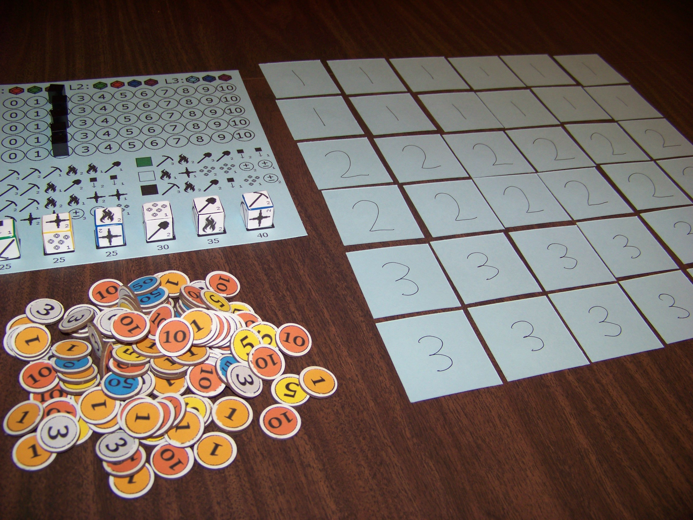
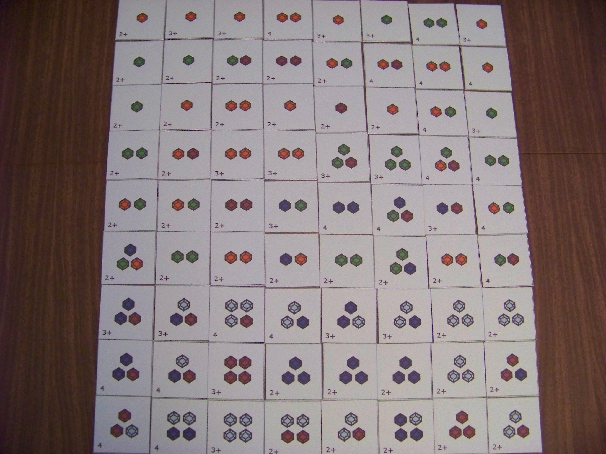

SHAREagraphs

The creative writing party game.
1/8/2017
Roll dice, find gems, make money.
Posted on 9/2/2017 by Tim Rice
Status: Prototype (playtesters wanted!)
Hello! I've finally finished another prototype that I'm happy with, and I'm excited to share it with everyone. Some readers might recognize this game from a previous blog post I wrote about my abandoned prototypes.
Well, I ended up revisiting that design, giving it a major revamp, and fixing a lot of the problems that frustrated me before. It was a great experience, and it just goes to show that it's a good idea to review old ideas every once in a while. I think it turned out really well, but I need your help to improve it even more!
Dig Deep is an economic dice game where players lead mining operations. The goal is to secure the largest profit by finding the most valuable gems, upgrading your tools, and manipulating the market. In addition to its core mechanics of dice rolling and resource management, the game has light area control, engine building, and commodity speculation mechanics as well.
These are some of the game's main features:
As far as complexity goes, my goal was to design it as a medium-light weight strategy game. Obviously it's tough to judge my own design in this regard, but I think it turned out a bit heavier than I was expecting. I still think most families wouldn't have much trouble understanding it after a few turns, but I'll admit that there are a few tricky parts (especially investing), and it is possible to have multiple difficult decisions per turn.
What I like about this game most, and what I think makes it unique, is how it implements a dynamic economic system in an easily digestible package. Being able to hold onto gems until the market improves, rushing to mine gems of a certain type before their price goes down, and manipulating the market to suit your current needs all appear naturally from these mechanics. I think it's pretty cool that it does all that in a short timeframe.
If you're interested in trying it out, I included links to the full instructions below, as well as the components file with assembly instructions.
If you do play it, I would be eternally grateful if you (and anyone you played with) filled out this survey. It asks some basic questions about your experiences with the game, which will help me make it the best it can be. I'll do my best to credit you as a playtester if the game is ever published.
Finally, if you're interested in publishing this game, email me at partyhatpotato@gmail.com.
Thanks for reading, and if you decide to help me test my game then I'm even more grateful. I hope you guys enjoy it.